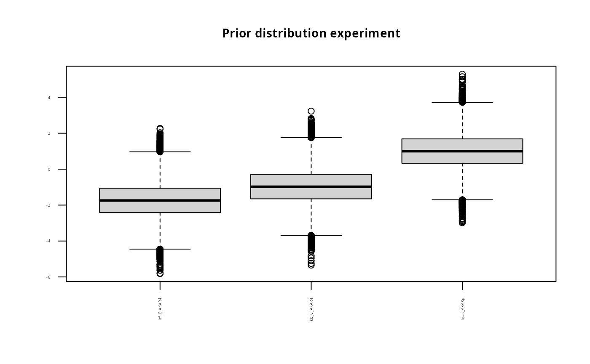
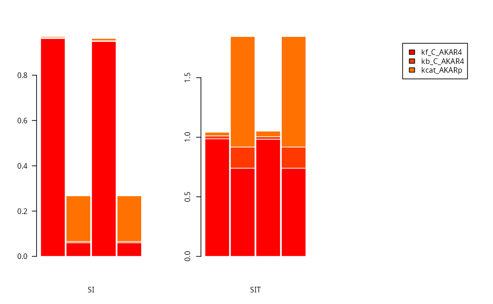
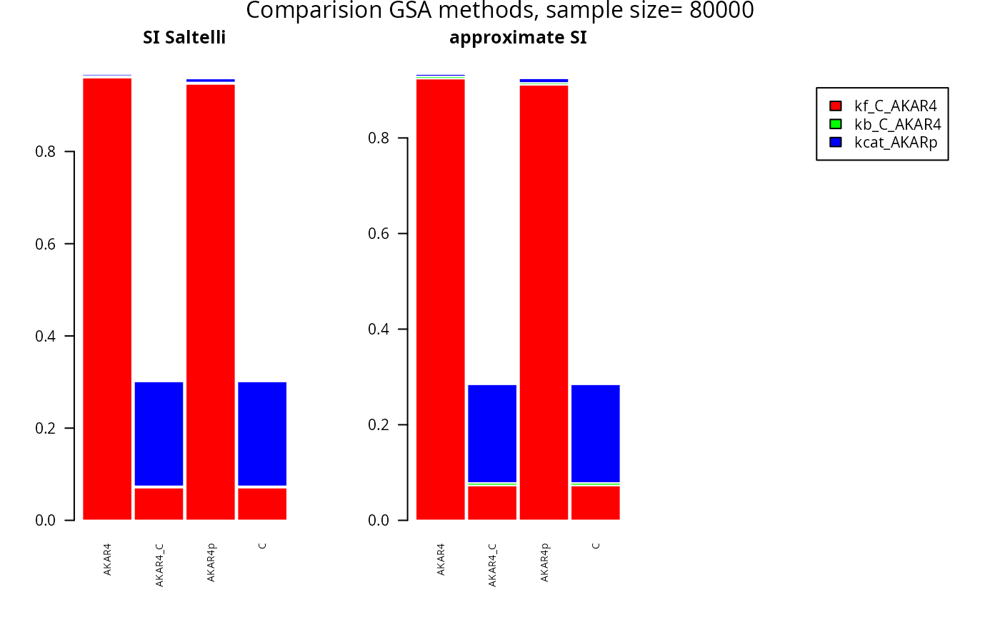
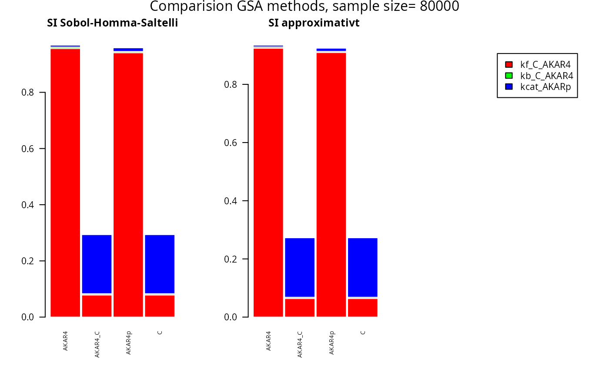

Global sensitivity analysis on AKAR4 - independent input factors
GSA_AKAR4.RmdThis article provides code do perform global sensitivity analysis with the Sobol-Saltelli method and the with the binning-approach.
Load the SBtab files, create ODE model code and load examples similar to the simulate the AKAR4 model deterministically example
modelFiles <- uqsa_example("AKAR4",full.names=TRUE)
SBtab <- SBtabVFGEN::sbtab_from_tsv(modelFiles)
#> [tsv] file[1] «AKAR4_100nM.tsv» belongs to Document «AKAR4»
#> I'll take this as the Model Name.
#> AKAR4_100nM.tsv AKAR4_25nM.tsv AKAR4_400nM.tsv AKAR4_Compound.tsv AKAR4_Experiments.tsv AKAR4_Output.tsv AKAR4_Parameter.tsv AKAR4_Reaction.tsv
modelName <- checkModel("AKAR4",uqsa_example("AKAR4",pat="_gvf[.]c$"))
#> building a shared library from c source, and using GSL odeiv2 as backend (pkg-config is used here).
#> cc -shared -fPIC `pkg-config --cflags gsl` -o './AKAR4.so' '/home/andreikr/.local/R/library/uqsa/extdata/AKAR4/AKAR4_gvf.c' `pkg-config --libs gsl`
source(uqsa_example("AKAR4",pat='^AKAR4[.]R$')) #loads the R-code to run the ODE-model
#> Loading required package: deSolve
experiments <- sbtab.data(SBtab)
nInput <- length(experiments[[1]]$input)
p <- AKAR4_default()
nPars <- length(p)
nStates<-length(AKAR4_init())Set meta-parameters for the global sensitivity simulation
nSamples <- 40000nSamples corresponds to the number of samples in M1 (or M2) of the Soboll-Saltelli approach..The number of simulations of the Sobol-Saltelli approach consists of 2*nSampels+nPars*nSamples number of simulations. In the binning approach below we use 2*nSamples number of samples (corresponding to 2*nSamples number of simulations) to use the same number of independent sample points as Sobol-Saltelli.
Construct parameter prior samples according to Sobol-Saltelli (M1, M2, N).
rprior <- rNormalPrior(log10(p), array(1, nPars))
prior <- shs_prior(nSamples, rprior)
names(prior)
#> [1] "M1" "M2" "N"Plot parameter prior (M1)
title<-paste("Prior distribution experiment");
boxplot(prior$M1, main = title, names=names(p), las=2, cex.main=0.9, cex.axis=0.3)
#Simulate from the prior Set up simulator considering one experiment
expIdx <- 2 #experiment to look at
s <- simcf(experiments[expIdx],modelName,parMap=log10ParMap)Use states (compound concentrations) as output and look at one time point alone
T <-5 #timepoint to investigate
fM1 <- t(s(t(prior$M1))[[1]]$state[,T,])
fM2 <- t(s(t(prior$M2))[[1]]$state[,T,])
fN <- array(NA, dim=c(nSamples,nStates, nPars))
for (i in 1:nPars){
print(i)
fN[,,i] <- t(s(t(prior$N[,,i]))[[1]]$state[,T,])
}
#> [1] 1
#> [1] 2
#> [1] 3#Calculate and plot sensitivity indexes Calculate sensitivity indexes for sobol-saltelli
SA <- shs_gsa(fM1,fM2,fN)#Plot first (SI) and total-order (SIT) sensitivity indexes for sobol-saltelli
cols=rainbow(27)
par(mfrow = c(1, 3))
barplot(t(SA$SI[,]),
col=cols,
border="white",
space=0.04,
cex.axis=1,
xlab="SI", las=2, cex.main=0.9)
barplot(t(SA$SIT[,]),
col=cols,
border="white",
space=0.04,
cex.axis=1,
xlab="SIT")
barplot(c(0),
axes=FALSE,
col=cols,
border="white",
space=0.04,
cex.axis=1,
legend.text=SBtab$Parameter[,1])
Plot all states and timeponts for the experiment
allTimesSample=s(t(prior$M2))[[1]]$state
par(mfrow = c(2, 2))
for (i in 1:4) {
matplot(experiments[[1]]$outputTime,allTimesSample[i,,1:500] , type = "l", lty = 1,
col = c("red", "blue", "green"), xlab = "X",
ylab = "Y", main = names(AKAR4_init())[i])
}
Calculate first order sensitivity index (SI) based on binning approach
SIappr <-globalSensitivity(rbind(prior$M1,prior$M2), rbind(fM1,fM2), nBins = "Sturges")Plot SI for Sobol-Saltelli versus the binning approach
par(mfrow = c(1, 3))
barplot(t(SA$SI[,]),
col=cols,
border="white",
space=0.04,
cex.axis=1,
xlab="SI Sobol-Homma-Saltelli")
barplot(t(SIappr),
col=cols,
border="white",
space=0.04,
cex.axis=1,
xlab="SI approximativt ")
barplot(c(0),
axes=FALSE,
col=cols,
border="white",
space=0.04,
font.axis=2,
legend.text=SBtab$Parameter[,1])
mtext(paste("Comparision GSA methods, sample size=",as.character(2*nSamples)), side = 3, line = -2, outer = TRUE)